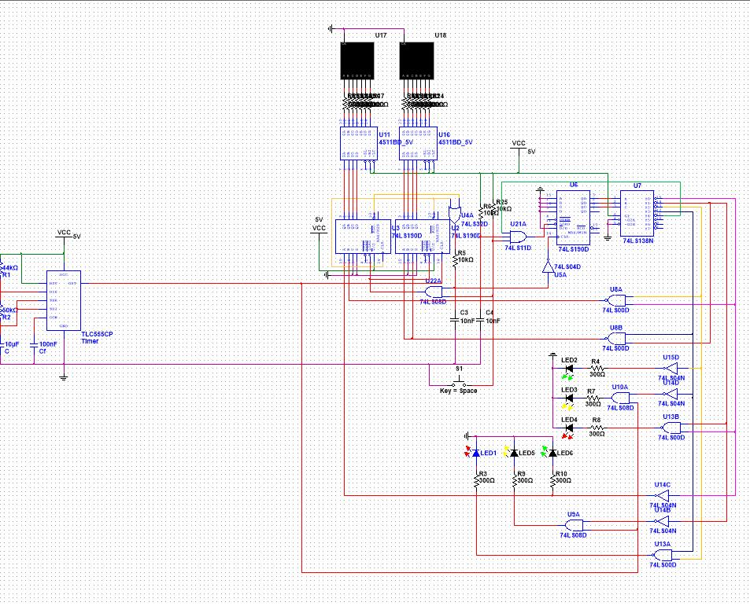
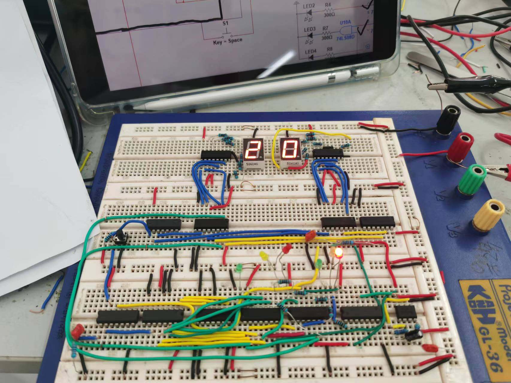

为什么要做这个项目Why I Studied This Project
这是本科阶段完成模拟电子技术和数字电子技术学习后的综合设计实验。单独学习理论时，容易停留在公式、芯片功能和课堂例题上；这个项目要求把“指标要求”转化为“电路结构、器件参数、仿真波形和可解释结果”，是从基础知识进入工程设计思维的重要一步。 This project followed analogue and digital electronics study. It moved the work from formulas and chip functions into circuit structure, component values, simulation waveforms and explainable results.
模电部分强调连续信号、功率输出、频率响应、失真和零点漂移；数电部分强调计数、译码、状态切换、时序控制、复位逻辑和真实插线调试。两部分放在一起，能帮助我理解电子系统既要在软件里验证逻辑，也要在真实器件连接中接受检验。 The analogue part focused on signal quality and power behaviour; the digital part focused on counting, decoding, timing, reset logic and physical wiring debug.
这个项目强化了我拆解任务、计算参数、搭建仿真、实物插线和根据结果反向修改设计的能力。报告中的反思也让我更早意识到：电路设计不是一次性画完图，而是反复检查连接、芯片状态、参数取值和局部功能的过程。 The project strengthened requirement breakdown, parameter calculation, simulation setup, breadboard wiring and result-driven design adjustment.
两个实验模块Two Experiment Modules
OCL 音频功率放大器设计OCL Audio Power Amplifier
围绕 5W 输出功率、8Ω 负载、18Hz-21kHz 频率响应、190kΩ 输入电阻、40mV 输入信号有效值等指标，完成前置级、音调控制电路和功放级设计，并使用 Multisim 进行仿真测试。Designed an OCL audio power amplifier around power, load, frequency-response, input-resistance and input-signal targets, then verified it in Multisim.
交通信号灯控制器设计Traffic Signal Controller
先在 Multisim 中使用 555 多谐振荡器、74LS190 同步十进制可逆计数器、74LS138 译码器、4511 显示译码芯片和门电路完成交通灯逻辑设计，再在面包板上用真实芯片和元器件复现仿真方案，实现主干道 30 秒、支干道 20 秒、黄灯 5 秒、1Hz 闪烁和系统归零功能。Designed the traffic-light logic in Multisim with a 555 timer, 74LS190 counters, 74LS138 decoder, 4511 display drivers and logic gates, then reproduced the design on a breadboard with real chips and components.
项目视觉图集Visual Gallery



设计流程Technical Workflow
| 阶段一Stage 1 | 拆解实验指标：模电侧关注输出功率、负载阻抗、输入信号、通频带、失真度和零点漂移；数电侧关注主支干道时序、倒计时显示、黄灯闪烁、复位功能和面包板实物复现可行性。Break down analogue targets for power and signal quality, and digital targets for timing, display, flashing, reset and breadboard feasibility. |
|---|---|
| 阶段二Stage 2 | 完成电路方案论证：模电采用差动输入、交越失真消除、甲乙类互补功放和反馈调节；数电采用 555 时钟、74LS190 级联减计数、74LS138 状态译码和门电路组合逻辑。Define circuit schemes: differential input, crossover-distortion reduction and feedback for analogue; 555 clock, cascaded counters and decoding logic for digital. |
| 阶段三Stage 3 | 进行参数计算与器件选择：模电报告列出电阻、电容、三极管、二极管、电源、虚拟仪表等理论计算值和实际取值；数电报告说明 74LS190 置数、减计数、加计数和保持状态的使用方式。Calculate parameters and select components, including analogue component values and digital counter operating modes. |
| 阶段四Stage 4 | 在 Multisim 中搭建并调试电路，使用虚拟示波器、功率表、失真度测试仪、波特图仪、数码管和 LED 状态显示检查电路表现；数电部分在仿真通过后，进一步用面包板、真实芯片和元器件进行插线复现。Build and debug the circuits in Multisim; after digital simulation passed, reproduce the traffic-light design on a breadboard with real chips and components. |
| 阶段五Stage 5 | 根据仿真和实物调试结果复核指标并总结问题：包括功放输出、失真、零点漂移、通频带、静态工作点，以及交通灯倒计时、状态转换、面包板布线、芯片引脚、器件检查和分块排查经验。Check simulation and hardware results against targets, then summarise amplifier metrics, timing logic, breadboard wiring, chip pins and modular troubleshooting. |
结果与总结反思Results and Reflection
模电实验结果Analogue results
- OCL 音频功率放大器目标输出功率为 5W，报告记录调试后输出功率参数为 4.259W，并作为技术指标检验结果。The OCL amplifier target was 5W; the report records a tuned output-power result of 4.259W for checking.
- 失真度结果为 0.197%，低于 1% 的设计要求。Distortion was recorded as 0.197%, below the 1% target.
- 零点漂移结果为 21.213mV，低于 100mV 要求。Zero drift was recorded as 21.213mV, below the 100mV requirement.
- 输入电压有效值为 40mV；通频带结果为低频 12.242Hz、高频 25.176kHz，满足低频小于 18Hz、高频大于 21kHz 的要求。Input RMS voltage was 40mV; bandwidth was recorded as 12.242Hz to 25.176kHz.
数电实验结果Digital results
- 实现主干道绿灯 30 秒、主干道黄灯 5 秒、支干道绿灯 20 秒、支干道黄灯 5 秒的循环状态。Implemented 30s main-road green, 5s main-road yellow, 20s branch-road green and 5s branch-road yellow states.
- 使用两个 74LS190 级联实现两位数码管倒计时，并通过译码与逻辑门控制红黄绿 LED 状态；仿真方案进一步在面包板上用真实芯片和元器件进行插线复现。Used cascaded 74LS190 counters for two-digit countdown and decoding logic for LED states, then reproduced the simulated design on a breadboard.
- 黄灯按 1Hz 闪烁，并设置系统归零按钮。Implemented 1Hz yellow-light flashing and a system reset button.
- 实验反思记录了布线交叉、元件参数选择、插板前芯片检查不足、芯片引脚问题和非门输入输出接反等调试问题，并总结了分块检查和重新布线的重要性。The report reflects on wiring, component selection, chip checking before breadboarding, chip-pin issues and modular troubleshooting.
对个人能力与岗位需求的联系Relevance to Engineering Roles
这个项目适合支撑硬件测试、电子助理工程师、设备调试、自动化基础、质量验证和技术支持相关岗位。模电部分训练了指标到参数的推导、频响与失真判断、虚拟仪表测量和结果解释；数电部分训练了计数器级联、状态译码、时序控制、复位逻辑、面包板插线和真实芯片故障定位。对早期工程岗位而言，它展示的是把课程知识转化为可检查、可调试、可复盘设计结果的基础能力。 This project maps to hardware testing, junior electronics engineering, equipment debugging, automation fundamentals, quality verification and technical support. It connects specification analysis, circuit modelling, simulation checking and troubleshooting.
项目问答Project FAQ
这个项目的设计重点是什么？What was the main design focus?
项目重点是从指标开始组织设计流程。模电部分需要根据输出功率、负载、通频带、输入信号和失真要求选择 OCL 功放结构并计算参数；数电部分需要把交通灯规则转成计数、置数、译码和状态循环逻辑，并把 Multisim 中验证通过的方案用面包板和真实芯片复现。设计判断来自指标拆解、器件理解、软件验证和硬件调试过程。The project started from design requirements. The digital design was verified in Multisim and then reproduced on a breadboard with real chips and components.
模电部分最关键的技术点是什么？What was the key analogue design point?
关键点是围绕 OCL 音频功率放大器处理功率输出、交越失真、零点漂移和频率响应之间的关系。报告中采用差动输入放大、交越失真消除、甲乙类互补功放和反馈调节，并用 Multisim 检验输出功率、失真度、零点漂移、输入电压、输出波形、通频带和晶体管静态工作状态。The key was balancing output power, crossover distortion, zero drift and frequency response in an OCL audio amplifier.
数电部分最关键的技术点是什么？What was the key digital design point?
关键点是把交通灯运行规则转成可循环的数字逻辑，并从软件仿真走到真实硬件复现。项目使用 555 产生 1Hz 时钟，使用 74LS190 实现倒计时和状态累加，使用 74LS138 译码输出不同交通状态，再通过门电路控制 LED 和数码管显示。面包板调试时需要处理插线、置数、级联、芯片引脚、器件检查和复位逻辑问题。The key was converting traffic-light behaviour into cyclic digital logic and reproducing the verified design on physical breadboard hardware.